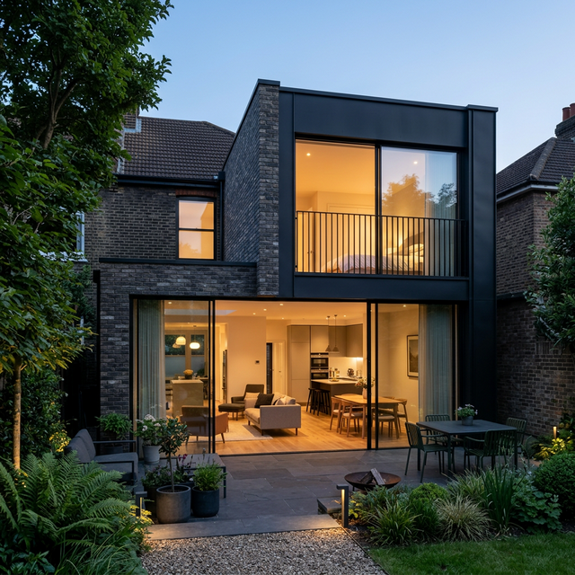
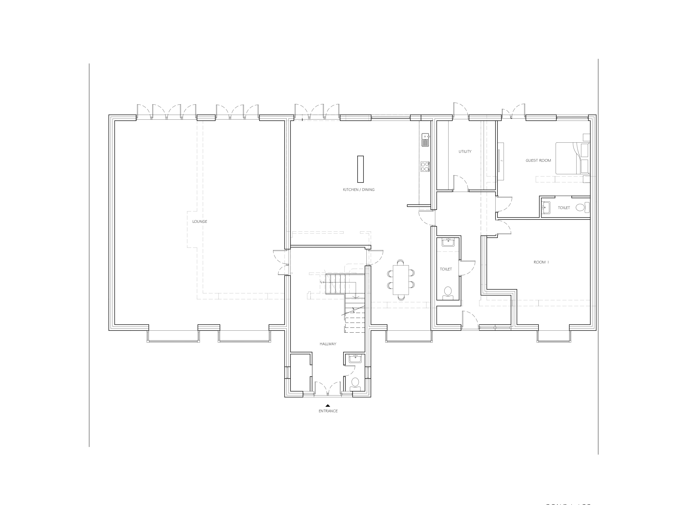
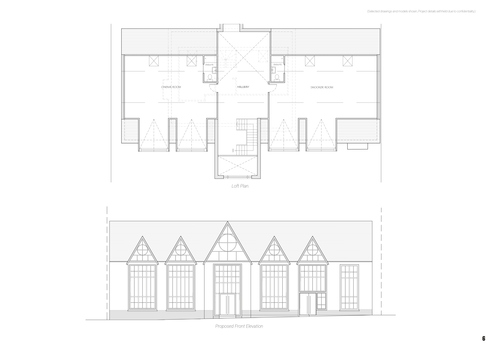

Professional Experience
2024 – 2025
Architectural Designer & BIM Technologist · London, UK
I'm a RIBA Part 2 Architectural Designer and BIM Technologist with an MSc in Advanced Construction Technologies and BIM from the University of Strathclyde. I offer end-to-end project delivery experience across RIBA Work Stages 0-4 on residential and commercial schemes. Technically proficient in Revit, AutoCAD, and ISO 19650-compliant information management, I focus on sustainable design and BREEAM frameworks, with expertise in federated model coordination and clash detection.



A curated selection of architectural and BIM projects.
2024 – 2025

2024

2023

2018 – 2023

Gallery
A&N Architects, London, UK
Ruby Builders, Chennai, India
Clark Contracts × WASPS Studios, Glasgow, UK
Airports Authority of India (AAI), Chennai, India
University of Strathclyde, Glasgow, UK
Sathyabama Institute of Science and Technology, Chennai, India
RIBA Part 1 & Part 2 equivalent qualification; thesis focused on airport terminal expansion – passenger flow modelling, spatial planning, and phased technical documentation.
Currently seeking new opportunities in architectural design, BIM management, and sustainable construction.